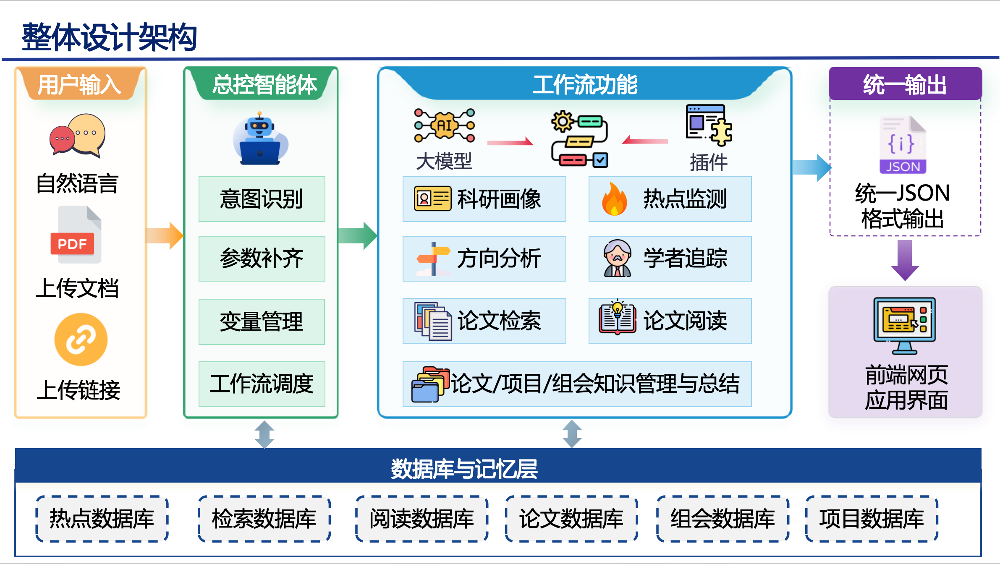
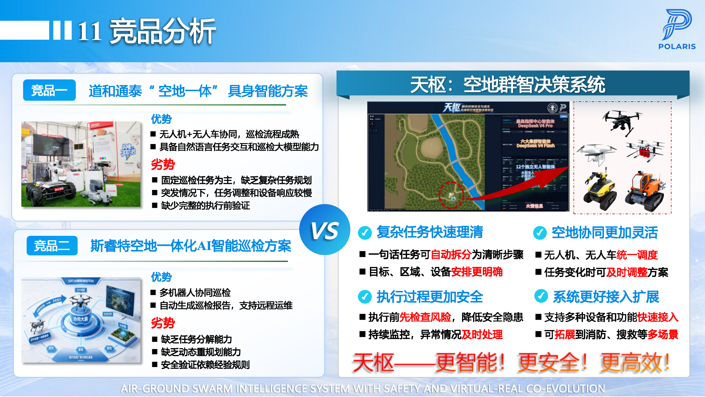
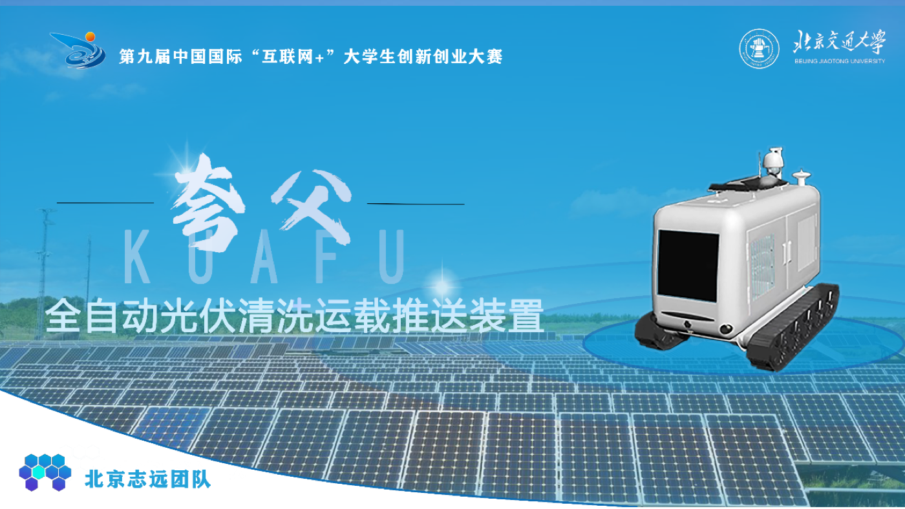
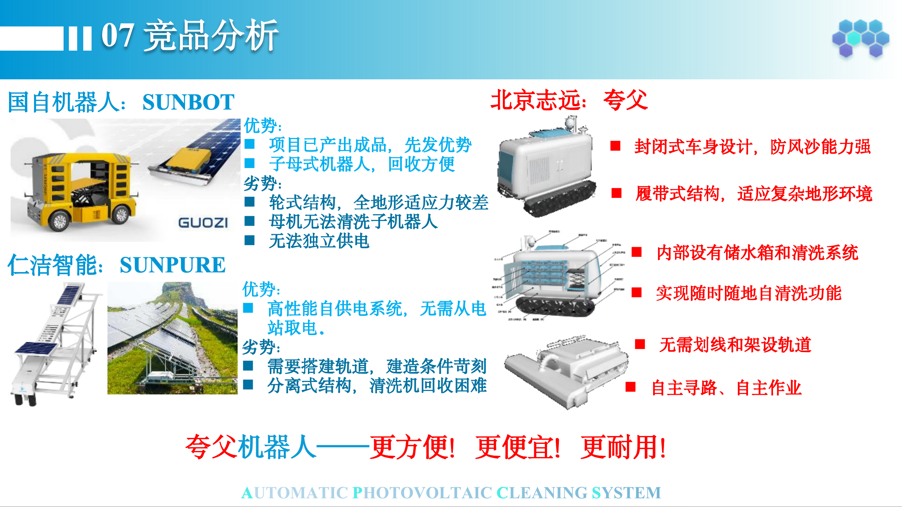

 科研智能体平台 · 研途喵 不只是帮助用户找到论文，更希望陪伴用户形成自己的科研路径。 背景高校科研过程中，论文资料、项目记录、组会材料和个人笔记常常分散在不同工具中。传统 AI 工具更多解决一次检索、一次问答或一次阅读，难以持续承接选题调研、论文理解、知识沉淀、研究方向判断和成果整理等长期过程。 难点项目难点集中在多工作流衔接和科研语义结构化：论文检索结果要能继续进入论文阅读，阅读结果要能入库、问答和形成画像；热点、学者、项目、组会信息又需要回到方向分析中形成可追踪的科研线索。 方案平台基于 Coze 搭建总控智能体，由自然语言需求触发意图识别、参数补齐、变量管理和工作流调度。围绕论文检索、论文阅读、知识库管理、热点监测、方向分析、学者追踪、项目/组会资料管理和科研画像构建连续支持流程，并通过统一 JSON 输出保证前端可稳定展示。 价值研途喵将分散的科研材料转化为可查询、可复用、可继续分析的结构化知识，帮助用户从“找到信息”进一步走向“形成个人科研资产”。它的目标不是替代研究判断，而是持续记录过程、整理线索并给出下一步行动参考。 我的工作负责平台整体功能规划、系统结构设计和内容整合，重点完成用户画像与科研画像模块设计。围绕用户基本信息、科研阶段、论文阅读情况、项目进度、收藏记录和关注方向设计画像字段、生成逻辑和展示方式，并参与智能体工作流、统一输出规范和前端信息结构设计。 论文检索论文智能阅读知识库管理热点监测方向分析科研画像 项目展示页 代码仓库
 第二十一届中国研究生电子设计竞赛 · 华北赛区初赛一等奖 天枢：融合控制安全与虚实共演的空地群智决策系统 让不同类型的智能体理解同一项任务，并安全、高效地协同完成。 背景森林巡检、灾害救援、消防搜救等复杂开放环境中，无人机、无人车和移动机器人需要协同执行任务。传统系统往往依赖固定巡检流程，缺少自然语言任务理解、复杂任务分解、执行前验证和异常情况下的动态调整能力。 难点异构智能体能力差异明显，设备状态、任务区域、风险约束和环境变化都可能影响调度结果。项目不仅需要解释“如何规划”，还需要证明方案在执行前可验证、执行中可调整、跨场景可扩展。 方案系统融合大模型任务理解、多智能体协同调度、数字孪生预演与安全控制。大模型负责复杂任务语义解析与自主分解；协同模块根据设备能力与状态进行任务分配和路径协同；数字孪生模块在执行前进行预演和风险评估；安全控制模块提供动态约束与异常处理。 价值通过“大模型规划 - 多智能体协同 - 数字孪生验证 - 安全控制”的链路，系统能够提高复杂任务拆解清晰度、空地协同灵活性、执行过程安全性和系统扩展能力。 我的工作主要参与多智能体协同部分设计，围绕无人机、无人车和移动机器人之间的任务分解、能力匹配、信息交互和协同执行开展方案梳理，并参与技术路线、商业计划书和竞赛汇报材料撰写。 获奖证明
  中国“互联网+”大学生创新创业大赛 · 北京赛区二等奖 全自动光伏清洗运载推送装置 用一台运载机器人连接多台清洗机器人，让光伏清洗真正连续起来。 背景大型地面光伏电站通常包含多组相互分离的光伏阵列，传统清洗机器人只能在单个阵列内工作，跨阵列转移依赖人工搬运，存在工作连续性不足、人工成本较高和设备利用率有限等问题。 难点项目需要兼顾机械结构、应用场景、商业模式和答辩表达。技术上要解决清洗机器人跨阵列转运、投放回收和连续作业问题；表达上要让评委快速理解设备为什么必要、如何降本增效、如何推广。 方案设计运载机器人与多台清洗机器人协同工作的自动化系统。运载机器人负责清洗机器人的运输、投放、回收和跨阵列转移，清洗机器人负责完成光伏板表面的自动清洁，通过功能分离实现大规模光伏电站的连续作业。 价值该方案突破单台清洗机器人作业范围有限的问题，提高设备复用率与整体清洗效率，减少人工搬运成本，并让光伏清洗系统更适合大面积、多阵列场景。 我的工作参与项目整体方案梳理、机器人系统结构分析、应用场景设计和创新点提炼，并参与项目申报材料、商业计划书和竞赛答辩材料撰写。 获奖证明